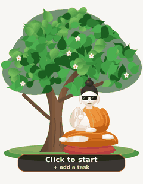

Your Zen Desktop Companion & Focus Timer
A peaceful Buddha who meditates under the Bodhi tree on your screen during deep focus, gently nudges distractions with screen lasers, and guides mindful breathing breaks.

Safe, Transparent & Malware-Free
Bodhi Pomodoro is 100% open-source software under the permissive MIT license. There are no trackers, no backdoors, no ads, and no hidden telemetry. All state and settings stay locally on your computer in your AppData folder. You can audit every line of source code yourself on GitHub.
Built for Peaceful Productivity
Everything you need to stay in flow without stressful alarms.
Procedural SVG Companion
Hand-crafted procedural vector artwork that lives seamlessly on your screen with a transparent background. He breathes rhythmically to synchronize your flow.
Gentle Distraction Lasers
Detects active distracting windows and gently fires harmless visual laser beams after a customizable grace period to guide you back to your task.
Growing Bodhi Tree
Your tree flourishes through 5 visual growth stages as you complete focus sessions throughout the day, giving rewarding feedback for your discipline.
Mindful Breaks
When focus ends, Bodhi wakes up and goes for a walk behind the tree, giving you space for guided box breathing, hydration, or a screen-free rest.
Quick 3-Click Setup
Pick your session duration (25m classic, 50m deep work, or custom), declare your goal, choose strict or ambient focus apps, and get straight to work.
Daily Focus Journal
Track your completed cycles, focus minutes, and task history with local daily summaries and exportable Markdown reports.
Installation & Uninstallation
Simple, standard Windows application management.
📥 How to Install
- Download the
Bodhi Pomodoro Setup 0.3.0.exeinstaller above. - Double-click the installer to launch the setup wizard.
- Choose your preferred install folder (or leave default).
- Click Install. Desktop and Start Menu shortcuts will be created automatically.
⚠️ Windows SmartScreen Notice
- Because this is an independent open-source app without an expensive commercial certificate, Windows Defender SmartScreen may display: "Windows protected your PC".
- Simply click "More info".
- Click "Run anyway".
- This is standard for all indie desktop apps!
🗑️ How to Uninstall
- Open Windows Settings (or press
Win + I). - Navigate to Apps > Installed apps (or Control Panel > Programs).
- Search for Bodhi Pomodoro in the list.
- Click the three dots (
...) and select Uninstall. - The app and all its shortcuts will be cleanly removed from your PC.